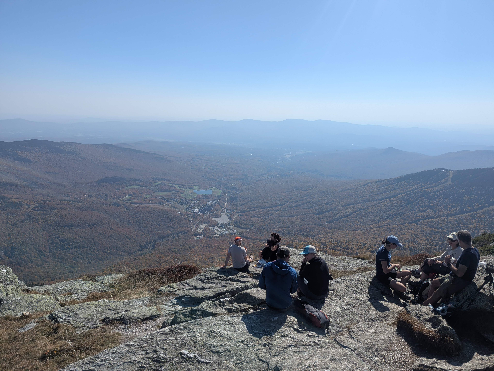

Mount Mansfield, Vermont State HP

A sea of leaves to be peeped.
Fall in New England, for many a four season lover, this is the super bowl. I am in fact not a four season lover. I would much rather have a constant cool 55F year round, and be able to go to things like snow as opposed to having snow come to me. But when in four seasons land, you might as well enjoy the novelty, so every year I try to make a leaf peeping pilgrimage with the rest of the looky loos.
For 2025 my pilgrimage included Mount Mansfield (4,395ft; 1,340m), the Vermont State High Point, one of the few places you can see color popping foliage, spruce forests, and alpine tundra on a single New England mountain.
Monut Mansfield is a three and a half hour drive from Boston, so the day trip my fellow leaf looker Angela and I had planned was a bit of a slog. Departing Massachusetts at 5am we had a joyous drive through the dense fog and a jovial encounter with a fellow car dweller at the West Lebanon NH McDonald.
Admittedly I had done minimal planning for our route: finding loop with the least milage that would let us see the whole mountain. The chosen path circumnavigated Killington Ski resort on the east flank of the mountain, stating at the resort parking lot, heading up Long Trail from Smuggler's Notch, gaining the ridge to the summit, descending the ridge to the south, and then looping back around on South Link to the south side of the resort as shown here.
Part of the reason for our early start was my suspicion that parking may be hard to find on the last Sunday of peak leaf. My suspicions were misplaced however as we showed up at the parking area to be the only ones in the lot a little before 9am. After a brief chat with Ranger Hagrid who seemed ready to dole out admonishment to the wayward Massachusettsians we set off up the mountain. Bog gave way to prime peepin leaves until we found ourselves huffing up boulder slabs amongst spruce.
We took a short snack break at the Taft Lodge. The Taft Lodge log book has some high class entries that much made up for its minimal views. Nonetheless, Angela and I agreed it would be a ruckus place to spend the night with a good crew. Upwards and onwards the spruce grew shorter and shorter till they ceased to deserve the title of tree. We gained the ridge at Eagle Pass and navigated the several scrambles up into the tundra.
As we approached the summit we were met with an oncoming horde of hikers who had started their trek from the top of the toll road, docents dashing to-and-fro to herd the hikers outside the lines to return to the rock. A quick lunch among the masses and some photos from the top was all the time we needed to desire reprieve from the swarm. We charged down the ridge south, taking in the views to the east and west, and stopping to detour around the Subway. The closer we made it to the Toll Road parking area, the more ill-prepared the intrepid wanders seemed to get, and we happily answered the inquires of several parties as to whether the view at the top was at all different to that they were currently observing.
Ducking around the nose to reach the South Link the crowd disappeared altogether, we did not see a single other sole on trial till the parking lot. The descent treated us to some great fungi and left us wishing our knees were fungible. Descending the famous Upper Nosedive, both Angela and I were apparently so inspired that we paid homage to the name within 10 seconds and 20 feet of each other. Walking, or tumbling, down a ski slope unsurprisingly is not as fun as skiing down a ski slope. We were somewhat relieved to be back in the trees on Haselton Trail so at least their trunks could stop our downward momentum, but the stair steps we faced the rest of the journey continued to take years off our knocking knees.
A little over 7.5 miles, 3,000ft, and 4 hours later we returned to a parking lot packed with BMW and G-Wagons. We beat the crowd in, but would we beat the crowd out?
No. The answer was no.
We sat with everyone else on the windy one lane roads bumper to bumper for about an hour before making it back to 89 south. No time for Ben and Jerry's unfortunately, I had to settle for a large caramel frappe, or Mc Crappe as I affectionately refer to it, to keep me awake on the slog back to Boston.
But hey, we certainly peeped some good leaf, so we of course we went home happy :).
 We saw many a fuzzy frens on the trail up.
We saw many a fuzzy frens on the trail up.
 Good leaf peepin, especially late in the peepin season, often comes with great leaf litter.
Good leaf peepin, especially late in the peepin season, often comes with great leaf litter.
 Some golden leaves well after golden hour on the ascent.
Some golden leaves well after golden hour on the ascent.
 Only the classiest of high class entries at the Taft Lodge. All time sign off contender.
Only the classiest of high class entries at the Taft Lodge. All time sign off contender.
 I think it may have been opposite day because the weather on the pass was beautiful and our language was colorful.
I think it may have been opposite day because the weather on the pass was beautiful and our language was colorful.
 Green green mini trees at the pass.
Green green mini trees at the pass.
 Looking north from just below the summit.
Looking north from just below the summit.
 Almost got stepped on to get a photo with the summit benchmark.
Almost got stepped on to get a photo with the summit benchmark.
 Looking south along the ridge we will soon descend.
Looking south along the ridge we will soon descend.
 Looking west from the back side of the Subway.
Looking west from the back side of the Subway.
 Little fungi poking out of a moss forest.
Little fungi poking out of a moss forest.
 Down the upper nose, moments before double disaster.
Down the upper nose, moments before double disaster.
 Some red on the way down in the trees.
Some red on the way down in the trees.
 Trees above the lot showing off, a good peepin.
Trees above the lot showing off, a good peepin.